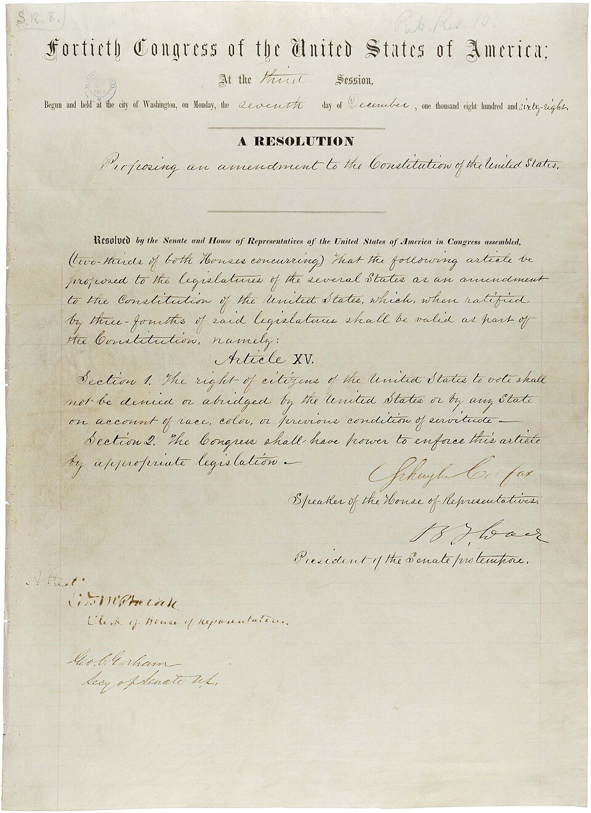
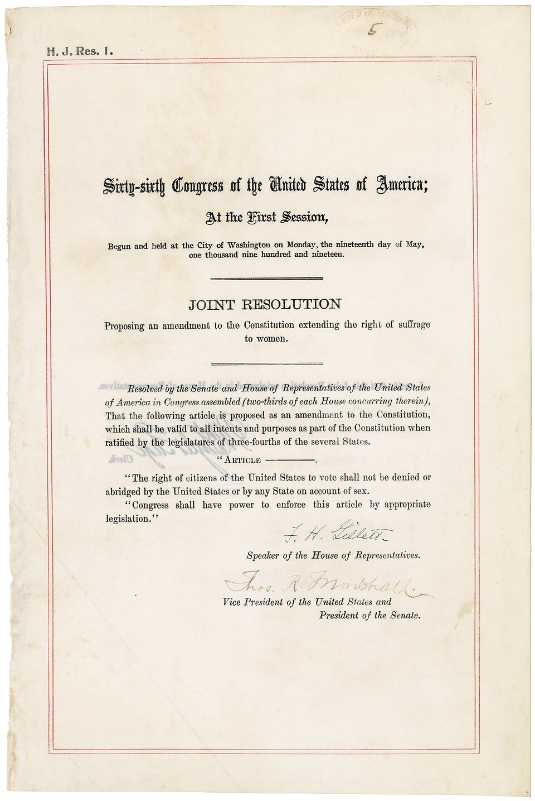
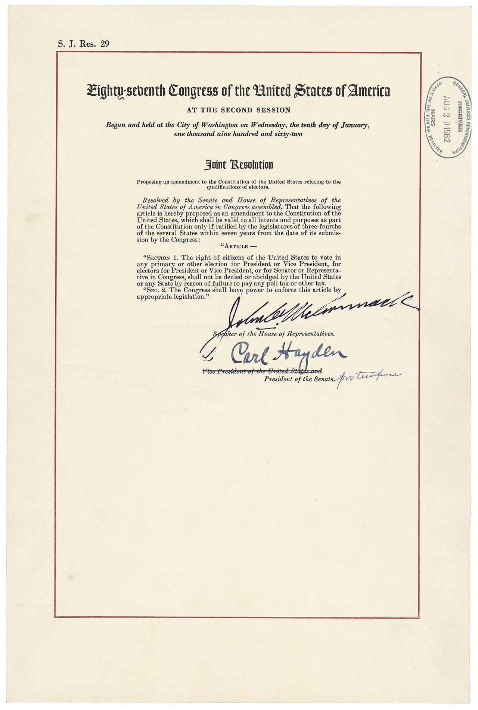
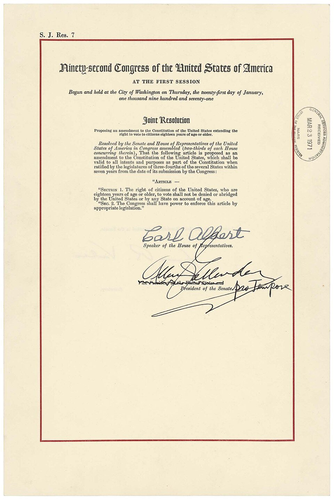
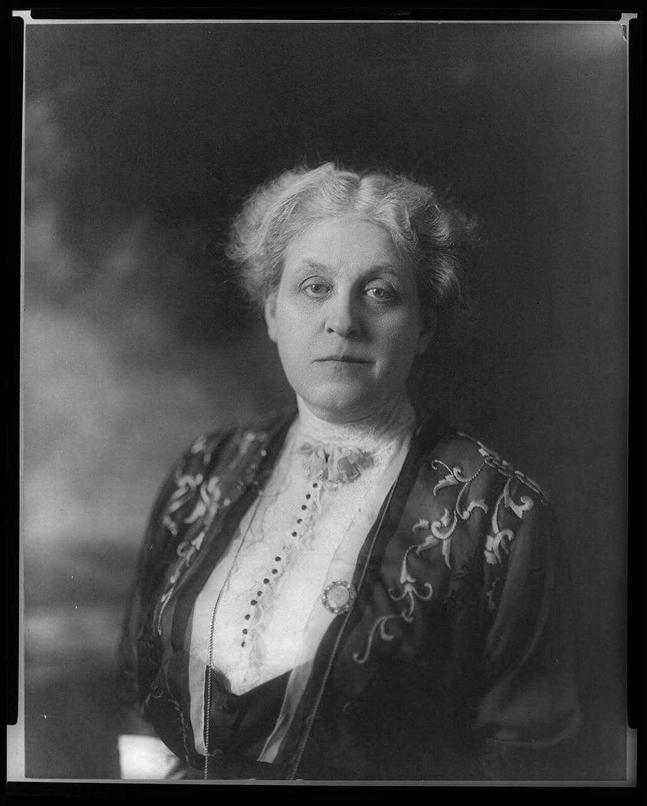
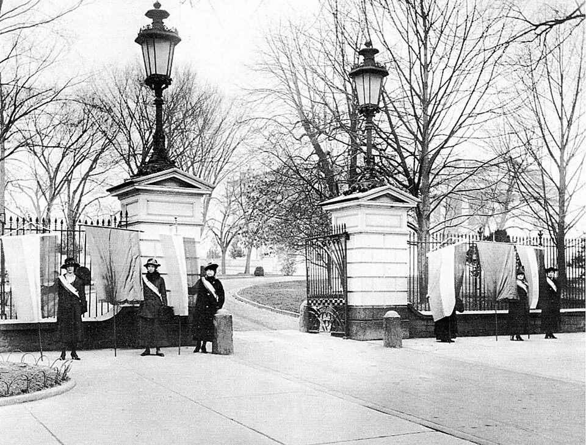
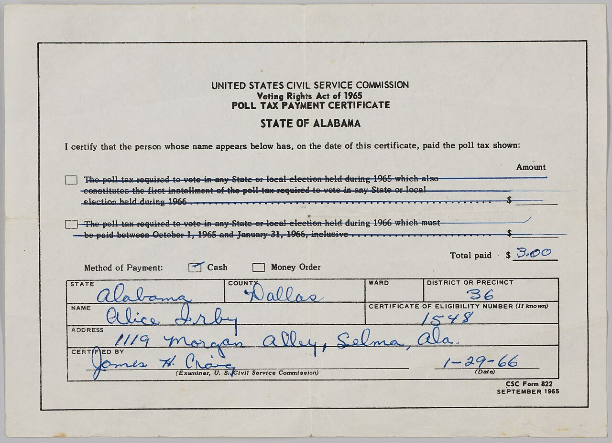
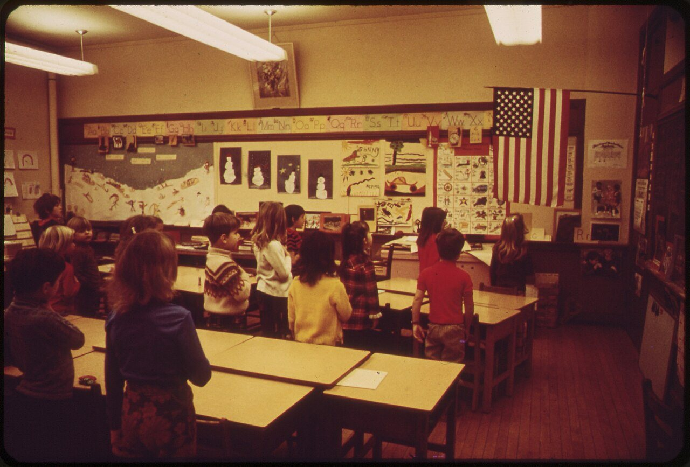
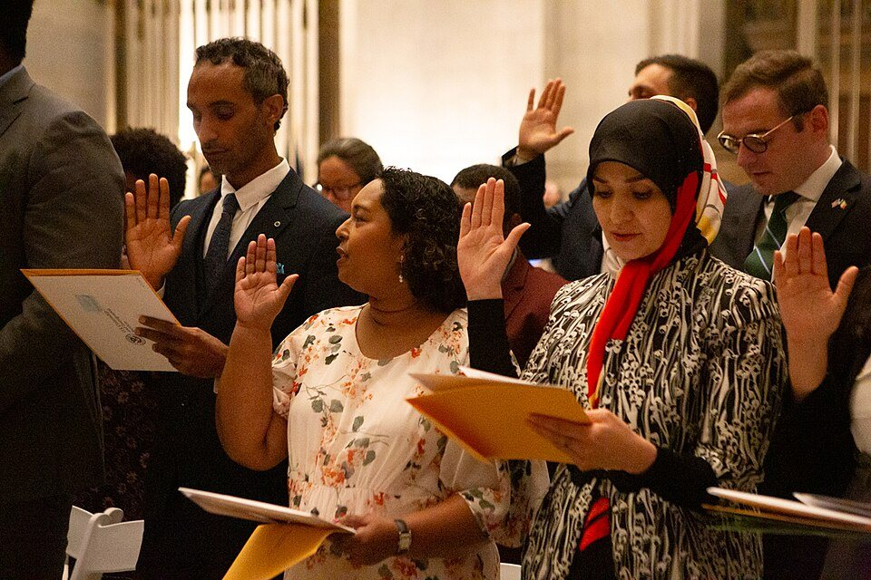
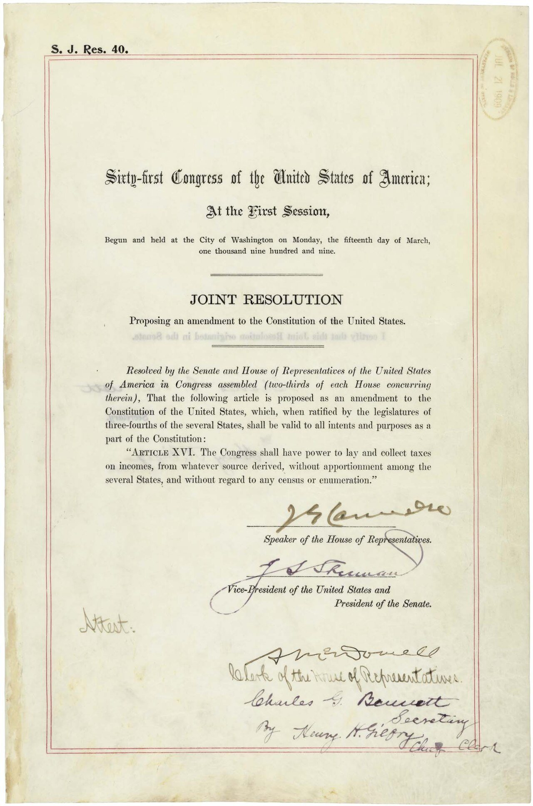

In Iowa you can sign up at 17. You vote once you’re 18.
☐ Selective Service
The law says nearly all men 18 through 25 must be on this list.
☐ Your first paycheck
Money for taxes comes out before you ever see it.
☐ A jury duty letter
Only citizens can be called to serve on a jury.
Which box surprises you the most?
The Citizen Checklist · Iowa Civics Test, Section 3
Today: 10 questions, 5 big ideas
1
Who got the vote, and when
Q63
2
Citizens only vs. everyone here
Q64 · Q65
3
Becoming a citizen
Q66★ · Q67 · Q68
4
Taking part and serving
Q69 · Q70
5
Two duties: taxes and Selective Service
Q71 · Q72
★ = one of the most important questions on the official list · Standards: SS.9-12.Gov.13 · Gov.14 · Gov.17
BIG IDEA 1 · WHO GOT THE VOTE
Four amendments opened up voting

1870 · 15TH
Any race
A male citizen of any race can vote.

1920 · 19TH
Women
Women and men can vote.

1964 · 24TH
No poll tax
You don’t have to pay to vote.

1971 · 26TH
Age 18
Citizens 18 and older can vote.
TEST QUESTION 63
Describe ONE of these. Easiest: “Citizens 18 and older can vote.”
The Citizen Checklist · Iowa Civics Test, Section 3
BIG IDEA 1 · WHO GOT THE VOTE
Wait, that’s real?

IOWA · 19TH AMENDMENT
An Iowan led the fight
Carrie Chapman Catt grew up near Charles City, Iowa. She led the national campaign that won women the vote.

1917 · WASHINGTON, D.C.
Arrested for a sign
Women stood outside the White House holding signs that asked for the vote. Police arrested many of them.

1966 · SELMA, ALABAMA
Pay to vote?
This is a real poll tax receipt. Many poor voters, especially Black voters, could not pay, so they could not vote.
The Citizen Checklist · Iowa Civics Test, Section 3
BIG IDEA 1 · WHO GOT THE VOTE
Q63: describe ONE voting amendment
TEST QUESTION 63
There are four amendments to the U.S. Constitution about who can vote. Describe one of them.
Citizens eighteen (18) and older (can vote).
You don’t have to pay (a poll tax) to vote.
Any citizen can vote. (Women and men can vote.)
A male citizen of any race (can vote).
Any ONE of these counts.
IOWA WAS EARLY
In 1868, Iowa voters let Black men vote. That was two years before the 15th Amendment.
1971 · OLD ENOUGH TO FIGHT
During the Vietnam War, 18-year-olds could be drafted. But most states made you wait until 21 to vote. The 26th Amendment fixed that.
The Citizen Checklist · Iowa Civics Test, Section 3
Quick check: which amendment?
Hold up 1 finger = 15th · 2 = 19th · 3 = 24th · 4 = 26th
1
1972: a 19-year-old college student votes for president.
2
1920: women across the country can vote for president.
3
A county can no longer charge you a fee to vote for president.
4
1870: a man cannot be turned away from voting because of his race.
Race · Women · Money · Age = 15th · 19th · 24th · 26th
BIG IDEA 2 · CITIZENS ONLY VS. EVERYONE
Citizens only vs. everyone here
TEST QUESTION 64
Who can vote in federal elections, run for federal office, and serve on a jury in the United States?
U.S. citizens
Also accepted: Citizens · Citizens of the United States
TEST QUESTION 65
What are three rights of everyone living in the United States?
Freedom of expression
Freedom of speech
Freedom of assembly
Freedom to petition the government
Freedom of religion
The right to bear arms
Name any three. These come from the Bill of Rights.
The Citizen Checklist · Iowa Civics Test, Section 3
Sort it: citizens only, or everyone?
1 finger = citizens only · 2 fingers = everyone living in the U.S.
1
Vote for president
2
Practice any religion, or none
3
Serve on a jury
4
Join a peaceful protest
5
Run for Congress
6
Sign a petition to the government
The Citizen Checklist · Iowa Civics Test, Section 3
BIG IDEA 3 · BECOMING A CITIZEN
How do you become a citizen?
TEST QUESTION 68
How can people become United States citizens?
Be born in the United States, under the conditions set by the 14th Amendment
Naturalize
Derive citizenship (under conditions set by Congress)
Naturalize = apply, live here for years, then pass an English test and THIS civics test. Derive = become a citizen through a parent who is a citizen.

TEST QUESTION 66 ★
What do we show loyalty to when we say the Pledge of Allegiance?
The United States
The flag
Saying it is a choice. Since 1943, public schools can’t force anyone to say it.
The Citizen Checklist · Iowa Civics Test, Section 3
BIG IDEA 3 · BECOMING A CITIZEN
The promises new citizens make

TEST QUESTION 67
Name two promises that new citizens make in the Oath of Allegiance.
Give up loyalty to other countries
Defend the (U.S.) Constitution
Obey the laws of the United States
Serve in the military (if needed)
Serve (help, do important work for) the nation (if needed)
Be loyal to the United States
FROM THE REAL OATH
“…that I will support and defend the Constitution and laws of the United States of America against all enemies, foreign and domestic…”
Easy two to remember: obey the laws + be loyal to the United States.
The Citizen Checklist · Iowa Civics Test, Section 3
Key words in plain English
Word
What it means
Example
Poll tax
A fee you had to pay before you could vote
Banned in federal elections by the 24th Amendment
Naturalize
Become a citizen after being born in another country
Apply, live here for years, pass the test
Derive citizenship
Become a citizen through a parent who is a citizen
A kid with a green card becomes a citizen when their parent naturalizes
Allegiance
Loyalty
The Pledge of Allegiance; the Oath of Allegiance
Civic duty
Something citizens should do to help the country work
Voting, serving on a jury, paying taxes
Draft
When the government requires people to join the military
Last used in 1973
The Citizen Checklist · Iowa Civics Test, Section 3
BIG IDEA 4 · TAKING PART AND SERVING
Ways to take part and serve
TEST QUESTION 69
What are two examples of civic participation in the United States?
Vote · Run for office
Join a political party · Help with a campaign
Join a civic group · Join a community group
Give an elected official your opinion (on an issue)
Contact elected officials
Support or oppose an issue or policy
Write to a newspaper
Need TWO. Easy pair: vote + contact elected officials.
TEST QUESTION 70
What is one way Americans can serve their country?
Vote
Pay taxes
Obey the law
Serve in the military
Run for office
Work for local, state, or federal government
Easiest: obey the law. You already do it every day.
The Citizen Checklist · Iowa Civics Test, Section 3
BIG IDEA 5 · TWO DUTIES
Why pay federal taxes?

TEST QUESTION 71
Why is it important to pay federal taxes?
Required by law
All people pay to fund the federal government
Required by the (U.S.) Constitution (16th Amendment)
Civic duty
Easiest: required by law.
YOUR FIRST PAYCHECK
Before you get paid, money comes out for federal income tax, Social Security, Medicare, and Iowa income tax.
Tax Day is usually April 15. That’s the deadline to file your tax return for the year before. Some people get money back.
The Citizen Checklist · Iowa Civics Test, Section 3
BIG IDEA 5 · TWO DUTIES
Selective Service: who and why
TEST QUESTION 72
It is important for all men age 18 through 25 to register for the Selective Service. Name one reason why.
Required by law
Civic duty
Makes the draft fair, if needed
Easiest: required by law.
WHO AND WHY
Nearly all men 18 through 25 living in the U.S., citizens and immigrants, must be on the list. If there is ever a draft, names come from it.
There is no draft now. The last one ended in 1973. Men who skip it can lose most federal jobs, job training, and (for immigrant men) the chance to become citizens.
The Citizen Checklist · Iowa Civics Test, Section 3
IOWA · HOW VOTING WORKS HERE
Voting in Iowa: the basics
Who can register
A U.S. citizen who lives in Iowa and is at least 17. You can vote once you’re 18.
17 now?
If you’ll be 18 by the November election, you can vote in that year’s primary.
When to register
15 days before Election Day, or at the polls on Election Day with proof of who you are and where you live.
At the polls
Show a photo ID: Iowa driver’s license or ID card, U.S. passport, military or veteran ID, tribal ID, or Iowa Voter ID card.
Paper ballots
You fill in the ovals on a paper ballot. Then a machine scans it.
Absentee (early) voting
Vote early at the county auditor starting 20 days before. Mailed ballots must ARRIVE by 8 p.m. on Election Day.
Source: Iowa Secretary of State, sos.iowa.gov and voterready.iowa.gov (checked Nov. 1, 2026)
Trap: the answer can look different
Q63: “Describe ONE voting amendment.” Any of these counts:
VERSION A
Citizens eighteen (18) and older (can vote)
VERSION B
You don’t have to pay (a poll tax) to vote
VERSION C
Any citizen can vote. (Women and men can vote.)
VERSION D
A male citizen of any race (can vote)
How to beat it
Q65 asks for rights of EVERYONE. “The right to vote” is a trap there. Voting is citizens only (Q64).
Learn the ★ question cold: Q66. The Pledge shows loyalty to the United States or the flag.
Wrong choices often sound nice but aren’t on the list, like “You must own land to vote.”
The Citizen Checklist · Iowa Civics Test, Section 3
GAME TIME · ABOUT 20 MINUTES
Pixel Town: Civic Quest
Walk with the arrow keys or WASD. Stand next to a building and press E.
Play each building’s mini-game: sort voters, check a rumor, plan a rally, build a petition, match citizenship cards, spend the town’s tax money.
Unlock the Election Stage in the middle after all 6 stamps. Miss one? Try that card again.